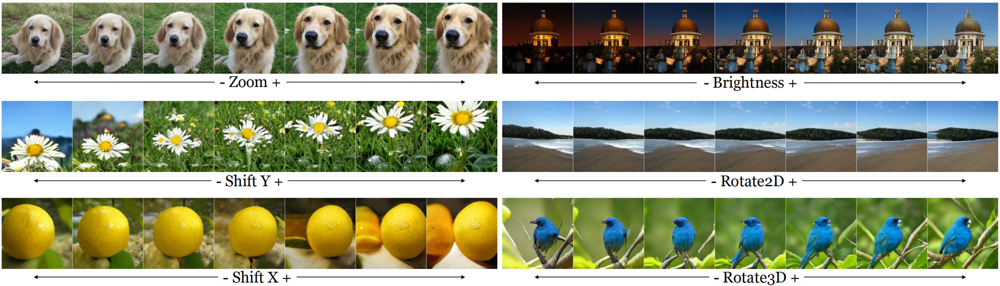

On the "steerability" of generative adversarial networks
[Paper] [Poster] [Code] [Video]

An open secret in contemporary machine learning is that many models work beautifully on standard benchmarks but fail to generalize outside the lab. This has been attributed to the fact that the models are trained on biased datasets, which provide poor coverage over real world events. Generative models are no exception, but recent advances in generative adversarial networks (GANs) make it look otherwise -- these models can now synthesize strikingly realistic and diverse images. Is generative modeling of photos a solved problem? We show that although current GANs can fit standard datasets very well, they still fall far short of being comprehensive models of the visual manifold. In particular, we study their ability to fit simple visual transformations such as camera movements and color changes. We find that the models reflect the biases of the datasets on which they are trained (e.g., centered objects), but that they also exhibit some capacity for generalization: by "steering" in latent space, we can shift the distribution while still creating realistic images. We hypothesize that the degree of distributional shift is related to the breadth of the training data distribution, and conduct experiments that demonstrate this.